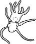
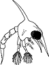
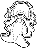
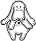
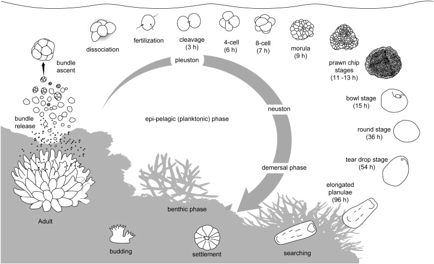

|
|
| index of concepts |
| Growing up on the shores metamorphosis updated Aug 2020
Most animals on our shores undergo metamorphosis - a change in form and function. Much like the butterfly starts its life as a caterpillar, undergoing several changes until eventually it looks totally different as an adult. The seas are alive: Most marine animals begin life as microscopic larvae. These may form directly in the water after egg and sperm meet, hatch from eggs or are released by the parent. The larvae join the plankton in the sea - a soup of living microscopic plants and animals. They drift with the currents to disperse to new places where they settle down and grow into larger adults. This is how marine life can 'travel' vast distances to colonise new shores. Life changing: Typical microscopic larvae of some animals of our shores don't look anything like the adults! Usually, marine larvae undergo several different changes in shape and function before they resemble the adults that we are familiar with. |
 sea star larva |
 crab larva |
 sea cucumber larva |
 sea urchin larva |
 flatworm larva |
snail larva |
| Here is an example of the lifecycle of hard corals with the changes that the larvae undergo before it settles down to grow into a new coral. |
 A stylised depiction of the reproductive cycle of Acropora. From "Effects of sediments on the reproductive cycle of corals R. Jonesa, G.F. Ricardoa, A.P. Negria, 2015 on ScienceDirect" |
| Survivor! The vast majority of larvae never
make it to adulthood as they are eaten by plankton feeders. Even when they are no longer microscopic, some marine animals such as crustaceans, continue to change form and function by moulting. Protected shores means more marine life everywhere: Because most marine life can disperse effectively from one shore to another, it makes sense to protect particularly rich shores from collection and other human impacts. On these protected shores, the animals can grow unmolested to reproductive size and age. And as they reproduce, their larvae disperse and settle outside the protected areas, providing a more sustainable supply of fish and other marine life for people everywhere to harvest. |